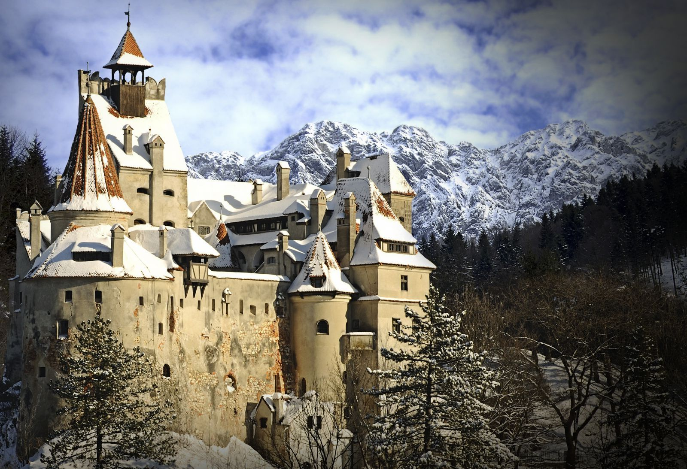
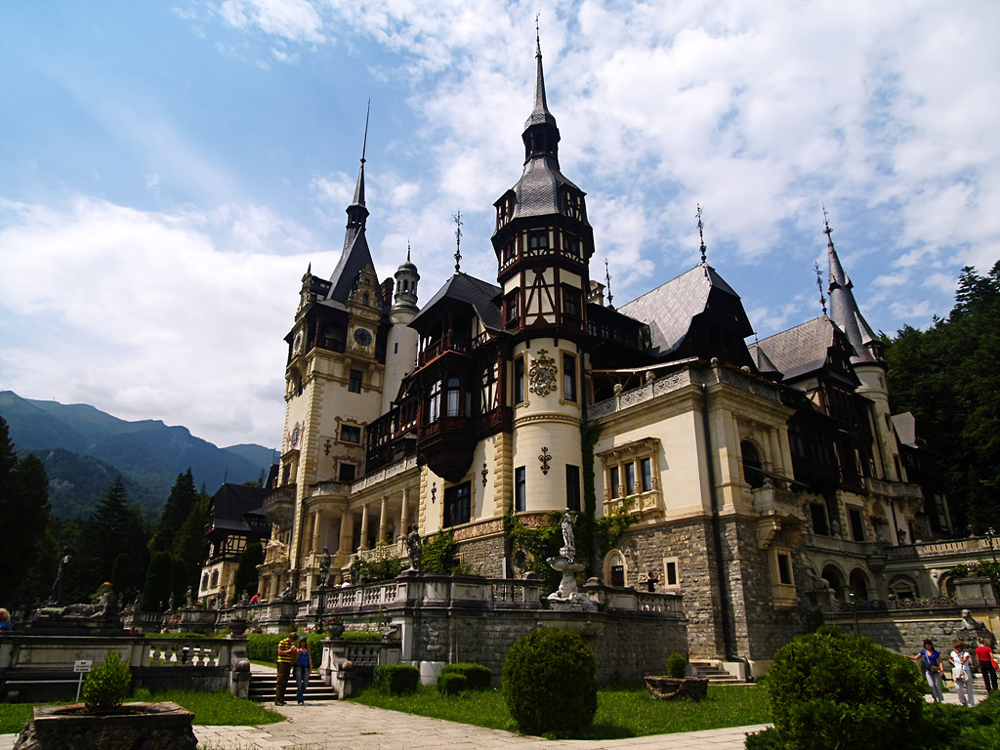

Castele şi Cetăţi
Castelul Bran

Castelul Bran se situează la mai puțin de 30 km de Brașov, pe șoseaua ce pornește din vechiul cartier Bartolomeu și leagă Brașovul de Câmpulung. Castelul Bran este construit pe o stâncă, într-un punct cheie din punct de vedere strategic.
 În prezent, în muzeul de patru
etaje sunt expuse colecții de mobilier, costume, arme și armuri, iar Domeniul
Bran cuprinde, de asemenea, Parcul Regal cu cele două lacuri, Casa de ceai,
Casa administratorului și Casa Principesa Ileana.
În prezent, în muzeul de patru
etaje sunt expuse colecții de mobilier, costume, arme și armuri, iar Domeniul
Bran cuprinde, de asemenea, Parcul Regal cu cele două lacuri, Casa de ceai,
Casa administratorului și Casa Principesa Ileana.
Castelul Peleș

Castelul Peleș din Sinaia, reședința de vară a regilor României, a fost construit la dorința regelui Carol I al României (1866-1914).
Castelul Peleș este unul dintre cele mai importante edificii de tip istoric din România, având caracter de unicat și este, prin valoarea sa istorică și artistică, unul din cele mai importante monumente de acest fel din Europa celei de-a doua jumătăți a secolului al XIX-lea.
Cele mai importante săli de vizitat sunt:
Holul de Onoare, Biblioteca regală, Sălile de arme, Sala de muzică, Sala Maură, Apartamentul Imperial,
Sala de Concerte, Sala de teatru
Cetatea Râșnov
Cetatea Râșnov este ansamblul fortificat situat pe dealul calcaros aflat la sudul orașului Râșnov din județul Brașov, unul din cele mai bine păstrate ansambluri fortificate din Transilvania. Cele mai vechi structuri păstrate până în prezent datează din secolul al XIV-lea, probabil pe locul fortificației din lemn ridicate de Cavalerii Teutoni la începutul sec. al XIII-lea.
Cetatea are douǎ curți: exterioară
și interioarǎ. În curtea exterioară (“curtea din fața cetății“ sau “grădina cetății”),
situatǎ în partea esticǎ, erau adăpostite vitele. Curtea exterioară are o intrare
pentru armament și alimente, și o alta, pe sub turnul pǎtrat, pentru vite. În incinta
cetății (curtea interioară) erau căsuțele locuitorilor, care serveau ca adăpost și
cămară în timpul asediilor. Încăperile poartă denumiri pe care le regăsim și la alte
cetăți țǎrǎnești: "a școlii", "a preotului", etc. Pe vârful colinei a fost construită
o școală și în anul 1650 a fost ridicatǎ o capelă ale cǎrei ziduri se mai vǎd și
astăzi. Datorită numeroaselor invazii militare, cetatea a fost “a doua vatră a
Râșnovului”.
Cetatea Făgărașului
Cetatea Făgărașului fiind aşezată la jumătatea drumului dintre Braşov şi Sibiu, Cetatea Făgăraşului este una dintre cele mai mari şi bine păstrate structuri medievale din România şi din Europa. Cetatea regală, înzestrată cu cel mai mare domeniu feudal din voievodat a fost construită la sfârşitul secolului al XlV-lea. Primele ştiri documentare care atestă existenţa cetăţii de piatră sunt din 1455, când este menţionat un ,,castelan”, iar în anul următor Iancu de Hunedoara, scriind braşovenilor, aminteşte de ,,cetatea noastră Făgăraş”. Cercetările arheologice din cetate, desfăşurate cu ocazia diferitelor etape de restaurare, au scos la iveală existenţa, înaintea acestei cetăţi de piatră, a unei fortificaţii din lemn cu val de pământ, construită aproximativ pe amplasamentul actualei cetăţii.
În prezent,
Cetatea Făgăraşului adăposteşte Muzeul „Ţării Făgăraşului”. Se pot vizita
încăperile, interiorul turnurilor şi scările înguste de piatră. Cea mai râvnită cetate-castel
de pe timpuri are 66 de încăperi, întinse pe cinci niveluri, însă doar o parte dintre camere
pot fi vizitate de turişti.
Castelul Hunedoarei

Castelul Hunedoarei, numit și Castelul Corvinilor sau al Huniazilor, este cetatea medievală a Hunedoarei, unul din cele mai importante monumente de arhitectură gotică din România. Este considerat unul dintre cele mai frumoase castele din lume, fiind situat în „top 10 destinații de basm din Europa”. Castelul Hunedoarei este cea mai mare construcție medievală cu dublă funcționalitate (civilă și militară) din România aflată încă "în picioare"
Câteva
dintre cele mai semnificative părți ale construcției: Galeria și donjonul,
Turnul Capistrano, Turnul buzduganelor, Bastionul alb, Sala Dietei.